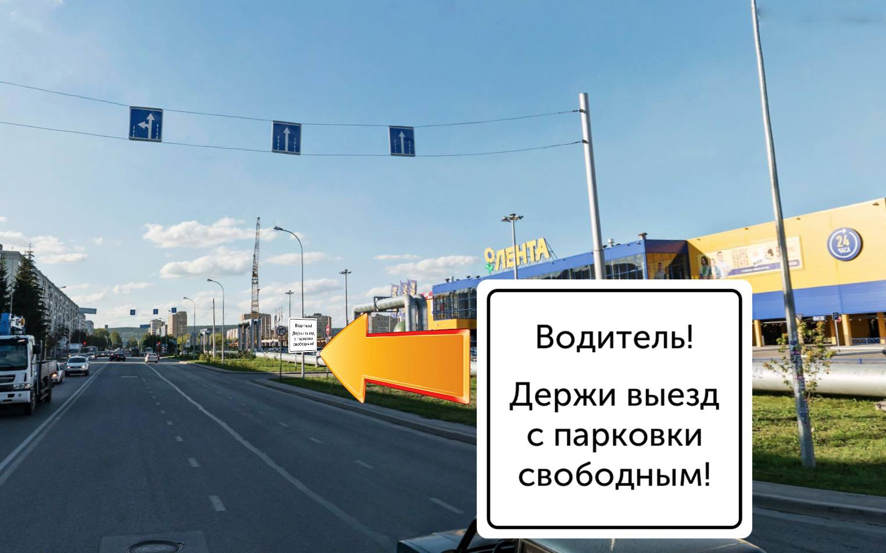

Многие россияне, кто никогда не покидал своего села, знают, что в США большинство дорожных знаков дублируются текстовыми табличками, написанными на понятном английском.
Во-первых, это позволяет соблюдать ПДД тупым, во-вторых, не каждую дорожную ситуацию можно урегулировать пиктограммой.
В России, к сожалению, подобная практика пока не прижилась, между тем дорожные ситуации возникают тоже.
Типичная сложность — выезд с парковки «Ленты» на Ленинградском. Для счастливых обладателей квартир в центре поясню — через 100 метров после выезда установлен светофор. Когда на нём загорается красный сигнал, один недалёкий (или неопытный) водитель, способен легко заблокировать выезд с парковки 5-10 экипажам с провиантом.

Что, если решение, которое предлагает известный кемеровский урбанист и водитель, способно привнести чуть больше порядка на наши и без того порядочные дороги?